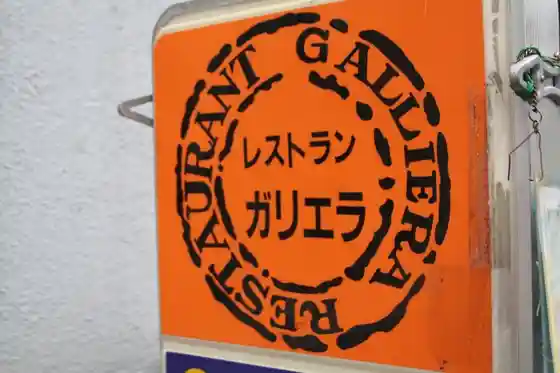
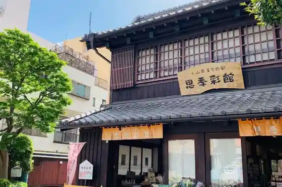
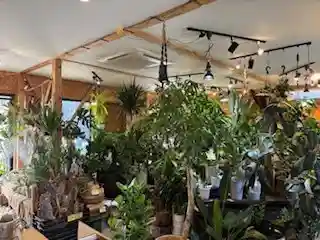

Workshop Omoigawa Sakura
Oyama, Tochigi · 0285-39-1020 · Official / source link
Ichigo Hiyori Ri
Oyama, Tochigi · 0285-35-2630 · Official / source link
Resutoran Gariera
Oyama, Tochigi · 0285-24-0999 · Official / source link

Oyama Machi no Eki Omoi Ki Sai Kan
Oyama, Tochigi · 0285-25-5611 · Official / source link

Kanyoshokubutsu Senmonten funnyplants
Oyama, Tochigi · 0285-37-9825 · Official / source link

Hakuo Daigaku Taiko Tera Kyanpasu Higashigawa Omoigawa Sakurazutsumi
Oyama, Tochigi · 0285-22-9273 · Official / source link
Oyama Homba Yuki Tsumugi Kurafuto Kan
Oyama, Tochigi · 0285-32-6477 · Official / source link
Kan Kan Ta Himo Mise
Oyama, Tochigi · 0285-45-0343 · Official / source link
Kan Kan Ta Himo Kumi Himo Experience
Oyama, Tochigi · 0285-45-0343 · Official / source link
Oyama Omoigawa Onsen (Higaeri Onsen)
Oyama, Tochigi · 0285-21-2020 · Official / source link
AOYA CAMPAGNE
Oyama, Tochigi · 0285-39-7555 · Official / source link
Homba Yuki Tsumugi Kigokochi Experience (Oyama Homba Yuki Tsumugi Kurafuto Kan)
Oyama, Tochigi · 0285-32-6477 · Official / source link
Oyama Tourism Association
Oyama, Tochigi · 0285-32-6477 · Official / source link
Ichigo Village
Oyama, Tochigi · 0285-33-1070 · Official / source link
Shiroyama Park (Gion Castle Ruins)
Oyama, Tochigi · 0285-22-9877 · Official / source link
U Aji Ie JR Oyama Ekikonai Mise
Oyama, Tochigi · 0285-24-9998 · Official / source link
Oyama Rentasaikuru (O-cycle (O Saikuru))
Oyama, Tochigi · 0285-30-4772 · Official / source link
Takehira Saku Oyama Mise Toki no Terasu
Oyama, Tochigi · 0285-28-7277 · Official / source link
Jinenjo Village
Oyama, Tochigi · 0285-49-3545 · Official / source link
Watarase Yusuichi Ko no Tori Koryu Kan
Oyama, Tochigi · 0280-51-4593 · Official / source link
Wakagoma Shuzo (Kabu)
Oyama, Tochigi · 0285-37-0429 · Official / source link
Sugita Shuzo (Osu Higashi Masamune)
Oyama, Tochigi · 0285-38-0005 · Official / source link
Sanpuku Shuzo (Hage Oyaji no Kakushi Sake)
Oyama, Tochigi · 0285-38-0003 · Official / source link
Kobayashi Shuzo (Ho Kinsho)
Oyama, Tochigi · 0285-37-0005 · Official / source link
Suga Shrine
Oyama, Tochigi · 0285-22-0101 · Official / source link
Biwa Tsuka Burial Mound Marishi Ten Tsuka Burial Mound
Oyama, Tochigi · 0285-22-9669 · Official / source link
Watarase Yusuichi Shizenkansatsu (Gaido Tsuki)
Oyama, Tochigi · 0285-22-9354 · Official / source link
Dorayakiwadaya Kan Kan Ta
Oyama, Tochigi · 0285-45-6780 · Official / source link
Oyama Ritsu Kurumaya Art Museum
Oyama, Tochigi · 0285-41-0968 · Official / source link
Oyama Ritsu Museum
Oyama, Tochigi · 0285-45-5331 · Official / source link
4 Chome no Korotsugaya San
Oyama, Tochigi · 0285-45-0607 · Official / source link
Otome Ya
Oyama, Tochigi · 0285-45-0127 · Official / source link
Oyama Kan Kan Ta City Tami Koryu Center (Shirasagi Kan)
Oyama, Tochigi · 0285-45-1335 · Official / source link
Ryu Masa Tera
Oyama, Tochigi · 0285-45-0102 · Official / source link
Nishibori Shuzo
Oyama, Tochigi · 0285-45-0035 · Official / source link
Chugokuryori Koko
Oyama, Tochigi · 0285-30-5518 · Official / source link
Komyo Tera
Oyama, Tochigi · 0285-32-2649 · Official / source link
Nishibayashi Tera
Oyama, Tochigi · 0285-22-2577 · Official / source link
Toyotarentariisu Tochigi Oyama Mise
Oyama, Tochigi · 0285-28-0900 · Official / source link
Mibu Shrine
Oyama, Tochigi · Official / source link
Kaferesutoran BeeHouse
Oyama, Tochigi · 0285-31-3000 · Official / source link
Morinagaseika Oyama Kojo
Oyama, Tochigi · Official / source link
Omoi no Kane
Oyama, Tochigi · 0285-38-0201 · Official / source link
Roadside Station Omoigawa
Oyama, Tochigi · 0285-38-0201 · Official / source link
Suroraifu Resort Ichigo Village
Oyama, Tochigi · Official / source link
Niku no Kawada
Oyama, Tochigi · 0285-38-0674 · Official / source link
Enman Tera
Oyama, Tochigi · 0285-38-0065 · Official / source link
Tochigiken Minami Kosetsu Chiho Oroshiuri Market
Oyama, Tochigi · 0285-38-3330 · Official / source link
Teuchi Chitsuke Shiru Udon Fuji E Mon
Oyama, Tochigi · 0285-25-0311 · Official / source link
Borudaringusupesu H
Oyama, Tochigi · 0285-38-7632 · Official / source link
Kyo Ho Tera
Oyama, Tochigi · 0285-22-0609 · Official / source link
Teuchi Chisoba Mitsuru Ga
Oyama, Tochigi · 0285-22-2371 · Official / source link
Nipponrentaka Oyama Nishiguchi Ekimae Eigyosho
Oyama, Tochigi · 050-1712-2834 · Official / source link